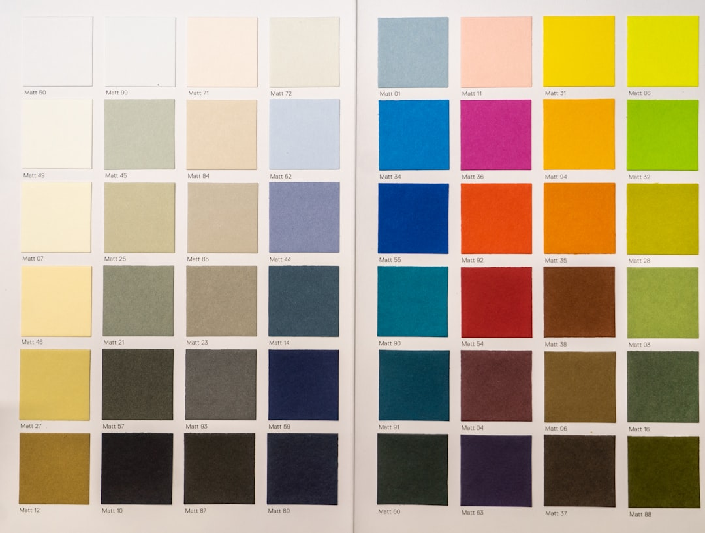

Mastering INP: The New Core Web Vital
Learn how to optimize Interaction to Next Paint (INP) to boost your website speed and Google search rankings.
Discover articles, guides, and practical breakdowns detailing modern web strategies that increase visibility, boost organic traffic, and secure 100/100 Core Web Vitals.
Learn how to optimize Interaction to Next Paint (INP) to boost your website speed and Google search rankings.

A deep dive into CSS techniques, aspect-ratio definitions, and dynamic element rendering rules to eliminate layout shifts.

Learn to manage colors, borders, and overlays across responsive themes with HSL tailored variables and custom style properties.
A comprehensive, step-by-step checklist to optimize your website for indexing, clean rendering, dynamic crawlers, and top rank performance in search engines.
Learn how modern design aesthetics like glassmorphism, responsive micro-interactions, and custom typography can coexist with high SEO rankings and quick load times.
A technical walkthrough detailing strategies to optimize LCP, INP, and CLS scores to earn an elite rating on Google's search algorithms.